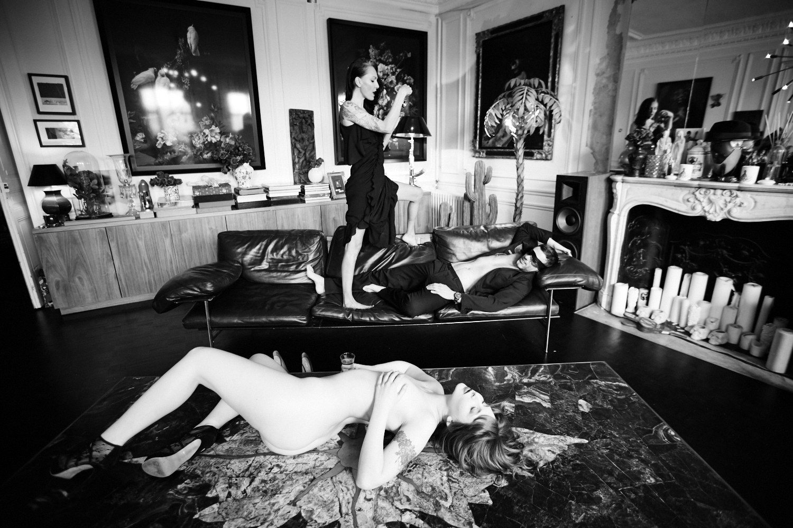
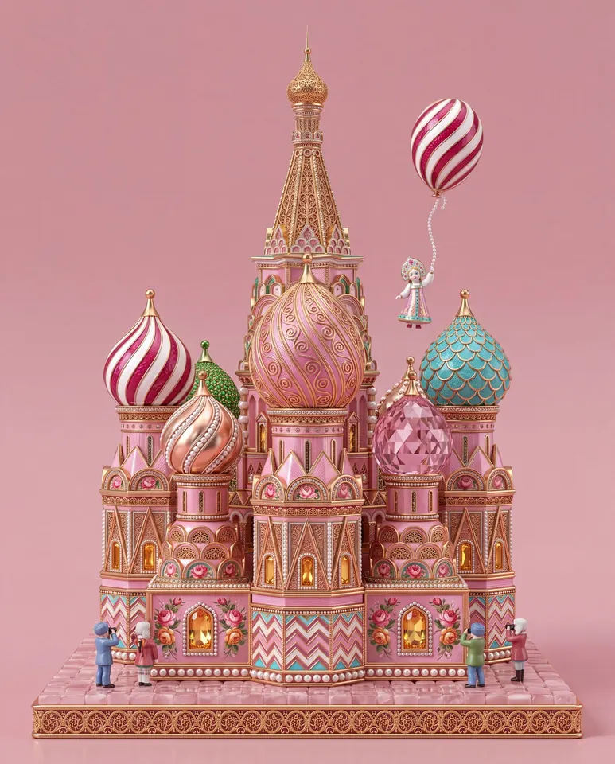
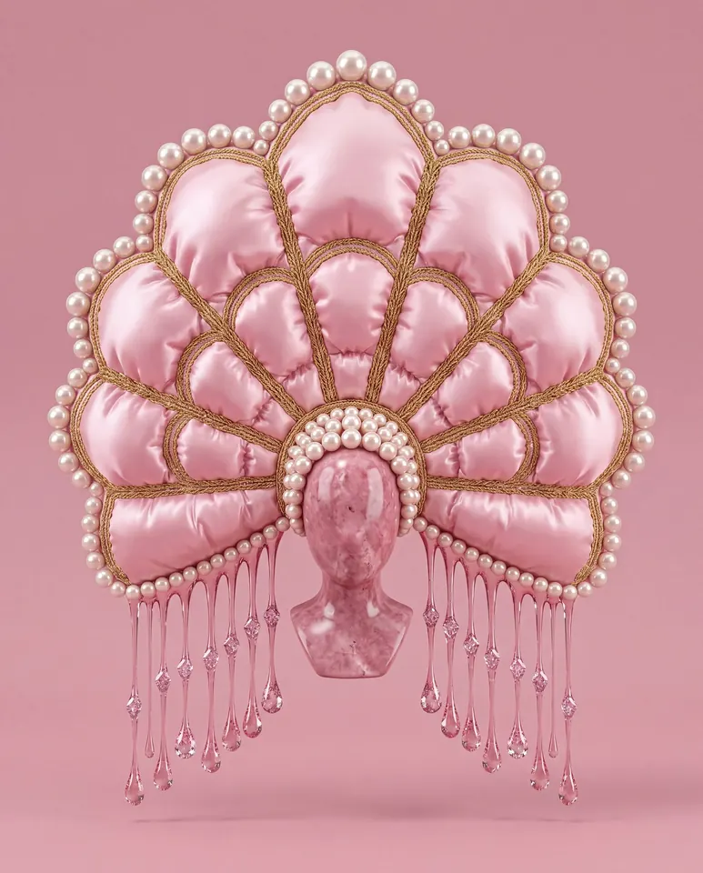

Film & video
A documentary portrait and animated paintings on screens.
Film portrait · in post-production
MALIKA
A film portrait of French photographer Malika Mokadem, my muse. The first in a series of films about the inner world of an artist.
View →

Animated paintings · video installation
Women on Mars
Three animated paintings for the screens of a women's event at MARS Gallery, Moscow. Mothers, men, robots.
View →AI art series
New series of my own: I direct AI the way I used to direct a camera.
2026Exhibition series · AI
Russian Code
The Moscow I grew up in, rebuilt as jewellery art objects: gold, enamel, pearls and crystal in a soft pink palette.
View →



AI series
Myths in the City
Fairy-tale heroes in today's city: a red cloak in the metro, a youth in a rose crown among swans. I shoot them as real people.
View →


AI series
Bloom
Flowers taller than people: tulips the size of trees, petals like satin skirts. The heroines live inside the flowers.
View →


Shot on camera, no AI
Costumes, props, real people in the frame. Everything here is real, no CGI.
Exhibited series · handmade
Living Lights of the Ocean
Glowing deep-sea creatures, all made by hand: costume sculptures by Roman Ermakov, a seabed of black paper. Featured in Creative Boom, Trend Hunter and Fubiz.
View →


2016Exhibition · tableaux vivants
Bosch
Tableaux vivants for Hieronymus Bosch's 500th anniversary: his symbols played by people with real props. Shown at Artplay, Moscow.
View →


Photograph · no AI
Madonna
A Madonna with a golden halo, shot on camera. The image ran on the cover of GEO Germany, 01/2024.
View →

Black & white
Film, flash, staging. This is where I started, and it is still my language.
2011Solo show · film
Solyanka. Temple of Former Love
Solyanka was the cult place where the new Moscow bohemia was born. I shot its nights from the opening, on film, with a direct flash. The archive became a solo show at Winzavod.
View →


2009First solo show · b&w
Dasha Yastrebova's Fairy Tales
My first solo show, at 19, at Pobeda Gallery. Staged fairy tales closer to the Brothers Grimm than to Disney.
View →